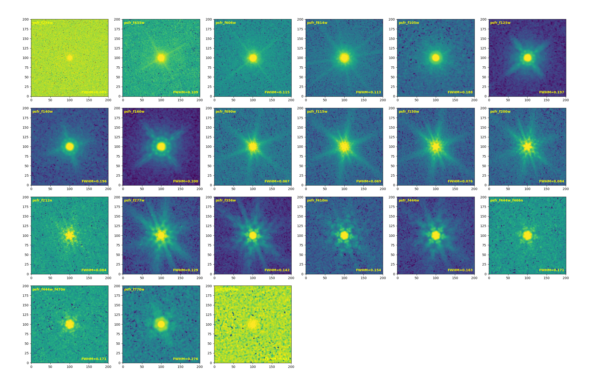
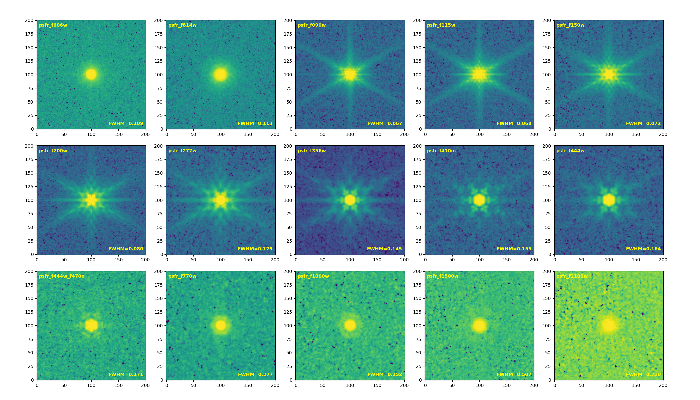
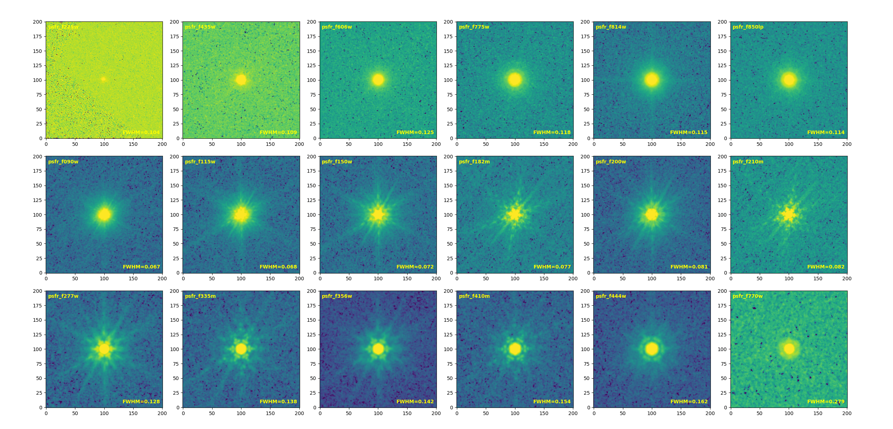
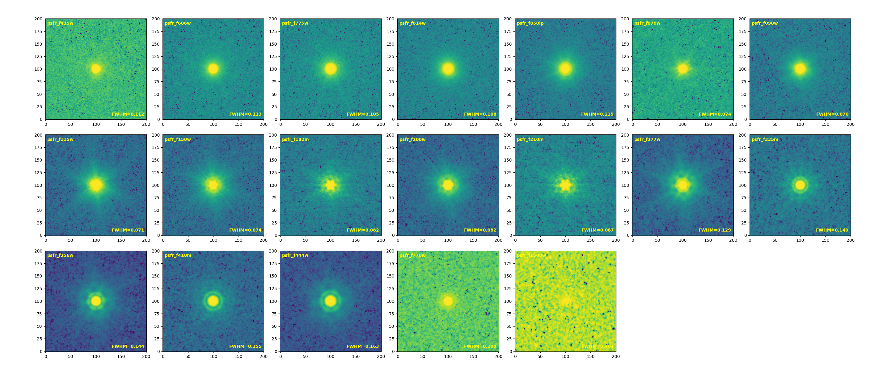
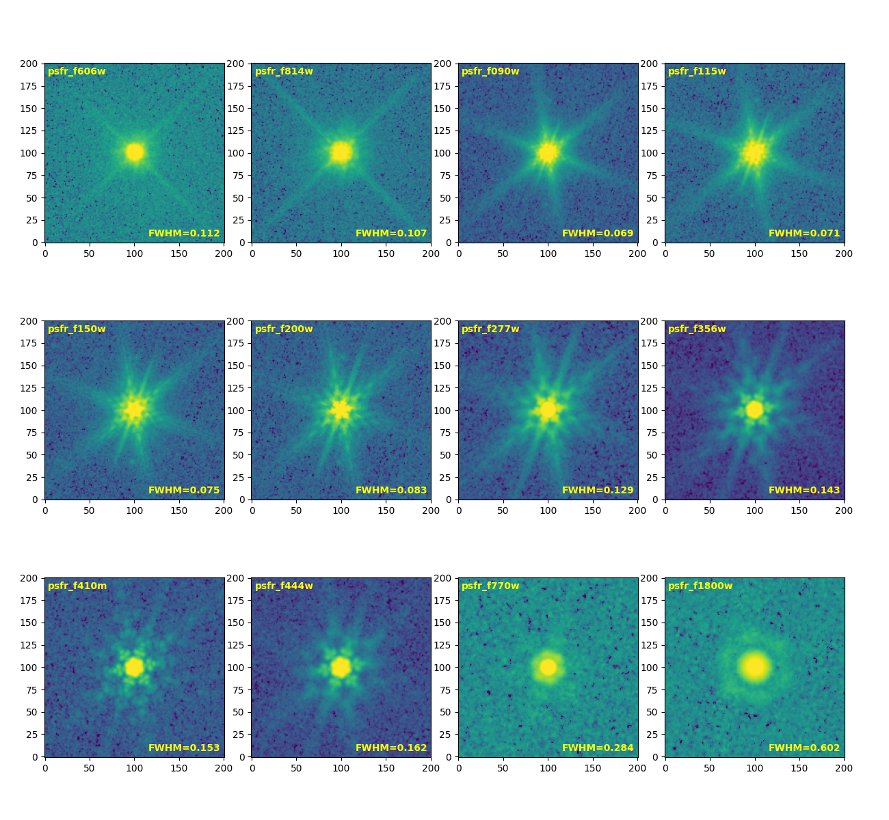

Data Release¶
Data Information¶
*drz.fitsScience image*wht.fitsWeight image*exp.fitsExposure imagestar_region_*.fitsMask image containing overexposed stars and persistence*segmentation.fitsSegmentation image obtained from detecting multi-band stacked images*final_segmentation.fitsThe final segmentation image obtained after a series of processing steps (including deblending, star and persistence masking, artifact removal, etc.), corresponding to the photometric star catalog*photometry.txtMulti-band photometric catalog
NIRCAM provides images with a scale of 0.03’’/pixel, while MIRI provides images with scales of 0.03’’/pixel and 0.09’’/pixel (indicated in the file names as 30mas and 90mas, respectively).
PIXAR_SR=2.11539874851881E-14 and PIXAR_A2=0.0009
PSF Empirical FWHM¶
HST (Link)¶
Band |
F435W |
F606W |
F775W |
F814W |
F850LP |
F098M |
F105W |
F125W |
F160W |
|---|---|---|---|---|---|---|---|---|---|
FWHM (arcsec) |
0.08 |
0.08 |
0.08 |
0.09 |
0.09 |
0.13 |
0.15 |
0.16 |
0.17 |
JWST (Link)¶
Band |
F560W |
F770W |
F1000W |
F1130W |
F1280W |
F1500W |
F1800W |
F2100W |
F2550W |
|---|---|---|---|---|---|---|---|---|---|
FWHM (arcsec) |
0.207 |
0.269 |
0.328 |
0.375 |
0.420 |
0.488 |
0.591 |
0.674 |
0.803 |
Stacked PSF¶
COSMOS¶

Band |
F606W |
F814W |
|---|---|---|
FWHM (arcsec) |
0.115 |
0.113 |
Band |
F090W |
F115W |
F150W |
F200W |
F212N |
F277W |
F356W |
F410M |
F444W |
F444W_F466N |
F444W_F470N |
|---|---|---|---|---|---|---|---|---|---|---|---|
FWHM (arcsec) |
0.067 |
0.069 |
0.076 |
0.084 |
0.084 |
0.129 |
0.142 |
0.154 |
0.163 |
0.171 |
0.171 |
Band |
F770W |
F1800W |
|---|---|---|
FWHM (arcsec) |
0.276 |
0.632 |
EGS¶

Band |
F606W |
F814W |
|---|---|---|
FWHM (arcsec) |
0.109 |
0.113 |
Band |
F090W |
F115W |
F150W |
F200W |
F277W |
F356W |
F410M |
F444W |
F444W_F470N |
|---|---|---|---|---|---|---|---|---|---|
FWHM (arcsec) |
0.067 |
0.068 |
0.072 |
0.080 |
0.129 |
0.145 |
0.155 |
0.164 |
0.171 |
Band |
F770W |
F1000W |
F1500W |
F2100W |
|---|---|---|---|---|
FWHM (arcsec) |
0.277 |
0.352 |
0.507 |
0.710 |
GOODSN¶

Band |
F435W |
F606W |
F775W |
F814W |
F850LP |
|---|---|---|---|---|---|
FWHM (arcsec) |
0.109 |
0.125 |
0.118 |
0.115 |
0.114 |
Band |
F090W |
F115W |
F150W |
F182M |
F200W |
F210M |
F277W |
F335M |
F356W |
F410M |
F444W |
|---|---|---|---|---|---|---|---|---|---|---|---|
FWHM (arcsec) |
0.067 |
0.068 |
0.072 |
0.077 |
0.081 |
0.082 |
0.128 |
0.138 |
0.142 |
0.154 |
0.162 |
GOODSS¶

Band |
F435W |
F606W |
F775W |
F814W |
F850LP |
|---|---|---|---|---|---|
FWHM (arcsec) |
0.112 |
0.113 |
0.105 |
0.108 |
0.115 |
Band |
F070W |
F090W |
F115W |
F150W |
F182M |
F200W |
F210M |
F277W |
F335M |
F356W |
F410M |
F444W |
|---|---|---|---|---|---|---|---|---|---|---|---|---|
FWHM (arcsec) |
0.074 |
0.070 |
0.071 |
0.074 |
0.082 |
0.082 |
0.087 |
0.129 |
0.140 |
0.144 |
0.155 |
0.163 |
Band |
F770W |
F1500W |
|---|---|---|
FWHM (arcsec) |
0.290 |
0.404 |
UDS¶

Band |
F606W |
F814W |
|---|---|---|
FWHM (arcsec) |
0.112 |
0.107 |
Band |
F090W |
F115W |
F150W |
F200W |
F277W |
F356W |
F410M |
F444W |
|---|---|---|---|---|---|---|---|---|
FWHM (arcsec) |
0.069 |
0.071 |
0.075 |
0.083 |
0.129 |
0.143 |
0.153 |
0.162 |
Band |
F770W |
F1800W |
|---|---|---|
FWHM (arcsec) |
0.284 |
0.602 |
Zero point (AB mag)¶
HST (from HLF)¶
Band |
F275W |
F336W |
F435W |
F606W |
F775W |
F814W |
F850LP |
F105W |
F125W |
F140W |
F160W |
|---|---|---|---|---|---|---|---|---|---|---|---|
zero point |
24.13 |
24.67 |
25.68 |
26.51 |
25.69 |
25.94 |
24.87 |
26.27 |
26.23 |
26.45 |
25.94 |
NIRCAM¶
28.08652 (for 0.03”/pixel)
MIRI¶
28.08652 (for 0.03”/pixel)
25.70091 (for 0.09”/pixel)
Version Information¶
NIRCAM¶
v1.0：Similar to the CEERS NIRCam pipeline, improve WCS calibration and background subtraction algorithms.
v1.1：Modify Modify the pipeline to move the WISP and 1/f processing steps to Stage 2, in order to insert the persistence masking process.
v1.2：Optimize the 1/f algorithm by setting the striping value to 0 when the mask exceeds 85% for any row or column. Also, optimize the outlier clipping algorithm.
v1.3：Construct a reference catalog using F814W and F160W, then create the F150W image. Next, use F150W and F160W to construct a reference catalog for processing NIRCAM data in other bands.
v1.4：Optimize the outlier clipping algorithm; build the first version of the reference catalog for UDS using UKIDSS, F814W, and F160W, with subsequent calibration processing methods identical to v1.3.
v1.4.1：Fix the WCS issue in COSMOS and UDS for F090W, F115W, and F200W.
v1.5：Introduce a new WISP subtraction algorithm (currently not used for data), update the WISP template, optimize mask construction for 1/f removal and background processing, improve the outlier clipping algorithm, fix a bug in the readout noise construction, and resolve background issues in the files before the final drizzle.
v1.6：Improve issues related to readout noise and add some outlier region mask.
v1.7：Expand the processed dataset to include all observations available as of August 25, 2026.
v1.0：JWST Calibration pipeline v1.12.5； CRDS pmap 1179
v1.1：JWST Calibration pipeline v1.12.5； CRDS pmap 1179
v1.2：JWST Calibration pipeline v1.12.5； CRDS pmap 1183
v1.3：JWST Calibration pipeline v1.12.5； CRDS pmap 1185
v1.4：JWST Calibration pipeline v1.12.5； CRDS pmap 1185
v1.5：JWST Calibration pipeline v1.13.4； CRDS pmap 1236
v1.6：JWST Calibration pipeline v1.16.1； CRDS pmap 1321
v1.7：JWST Calibration pipeline v1.16.1； CRDS pmap 1321
MIRI¶
v1.0：Built based on the CEERS MIRI and our NIRCAM v1.1 pipeline.
v1.1：Fix bug where model.meta.wcs, model.meta.wcsinfo, and model.meta.cal_step.tweakreg were not updated after WCS calibration in the data model.
v1.2：Similar to NIRCAM v1.4, build the reference catalog using F444W and F160W for MIRI WCS calibration.
v1.3：Fix WCS calibration issues in the pipeline.
v1.3.1：Fix the WCS issue in COSMOS and UDS for F770W.
v1.4：Improve the flat image construction algorithm (for detection, dq, and error), and update the strategy to create a flat image every 6 months; add an outlier masking step.
v1.5：Constructing a super background replaces the scheme of constructiong a flat file.
v1.7：Expand the processed dataset to include all observations available as of August 25, 2026. Version v1.6 was intentionally skipped to keep the MIRI version numbering consistent with NIRCAM.
v1.0：JWST Calibration pipeline v1.12.5； CRDS pmap 1177
v1.1：JWST Calibration pipeline v1.12.5； CRDS pmap 1179
v1.2：JWST Calibration pipeline v1.12.5； CRDS pmap 1185
v1.3：JWST Calibration pipeline v1.12.5； CRDS pmap 1185
v1.4：JWST Calibration pipeline v1.13.4； CRDS pmap 1216
v1.5：JWST Calibration pipeline v1.16.1； CRDS pmap 1321
v1.7：JWST Calibration pipeline v1.16.1； CRDS pmap 1321
Catalog¶
Construction¶
To obtain the multi-band catalog for JWST-SPRING, we built a dedicated pipeline using tools such as Gnuastro and Photutils. The specific processing steps are as follows:
Construct the stacked images for F277W, F356W, and F444W, and build masks for overexposed stars and persistence regions.
Use Gnuastro’s noisechisel for detection on both the F444W image and the stacked images.
Use the segmentation of the stacked image as a reference image to remove outliers from the F444W image segmentation detection.
Use Gnuastro’s astsegment for deblending on both the F444W image and the stacked image.
Query stars in each region using Gaia.query_object_async. For the F444W image in the corresponding regions, apply the deblending results from the stacked image to minimize over-deblending of stars.
Mask the detected regions in the F444W image segmentation using the overexposed star and persistence region mask images.
Manually inspect the F444W image segmentation, focusing mainly on checking for anomalies in the boundary regions.
Use Photutils to generate the final photometric catalog from the final F444W band segmentation image. (In the final output catalog, any objects with ISO or KRON photometry fluxes less than 0 in the F444W band will be discarded).
Columns Name¶
The zero point for the following is 23.9.
id：The source ID (due to various processing steps in the star catalog generation — some sources were discarded, so
the IDs are not continuous).
xcentroid：The x-coordinate of the centroid for each source (based on segmentation; not recommended for use, you can
use xcentroid_win below).
ycentroid：The y-coordinate of the centroid for each source (based on segmentation; not recommended for use, you can
use ycentroid_win below).
ra：The RA corresponding to xcentroid.
dec：The Dec corresponding to ycentroid.
xcentroid_win：Equivalent to SExtractor’s XWIN_IMAGE.
ycentroid_win：Equivalent to SExtractor’s YWIN_IMAGE.
ra_win：The RA corresponding to xcentroid_win.
dec_win：The Dec corresponding to ycentroid_win.
segment_flux：The ISO flux of the detection image (F444W).
segment_fluxerr：The ISO flux error of the detection image (F444W) based on the RMS image.
segment_mag：The ISO magnitude of the detection image (F444W).
segment_magerr：The ISO magnitude error of the detection image (F444W).
f_FxxxW：The total flux for each band (F444W band uses KRON flux, while other bands use ISO flux multiplied by a
correction factor).
e_FxxxW：The total flux error for each band (based on the RMS image).
background_sum：The background sum for the source’s corresponding segmentation (currently no additional background
subtraction has been performed during photometry, so this value is not available).
bbox_xmin，bbox_xmax，bbox_ymin，bbox_ymax：The bounding box limits for the segmentation region of the source.
cxx，cyy，cxy：The elliptical parameters, equivalent to those in SExtractor.
a_image： Equivalent to SExtractor’s A_IMAGE.
b_image：Equivalent to SExtractor’s B_IMAGE.
theta_image：Equivalent to SExtractor’s THETA_IMAGE.
kron_radius：Equivalent to SExtractor’s KRON_RADIUS.
fwhm：The full width at half maximum.
elongation：The ratio of the semi-major axis to the semi-minor axis.
ellipticity：1-elongation。
apcorr：The flux correction factor, obtained by dividing the KRON flux in the F444W band by the ISO flux.